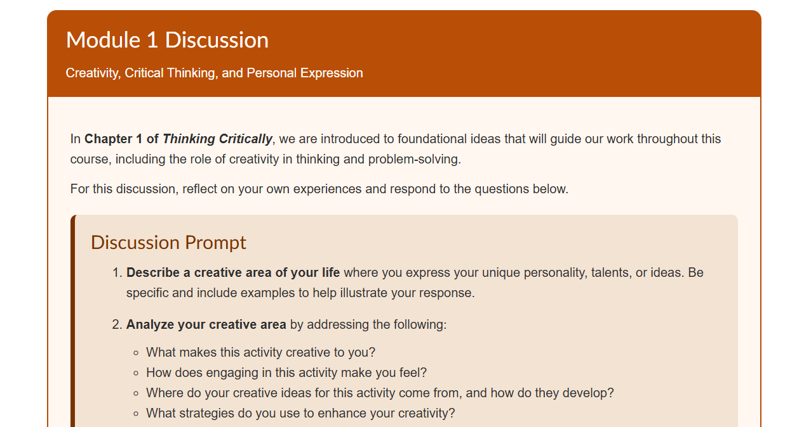
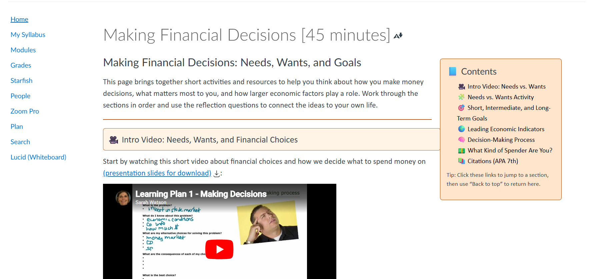
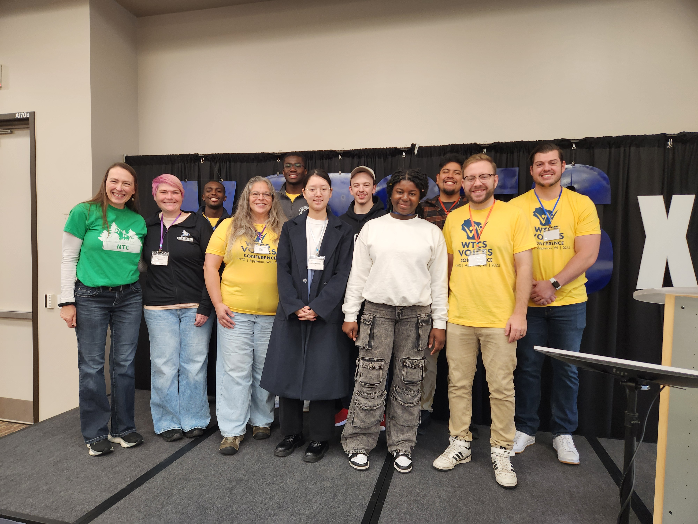
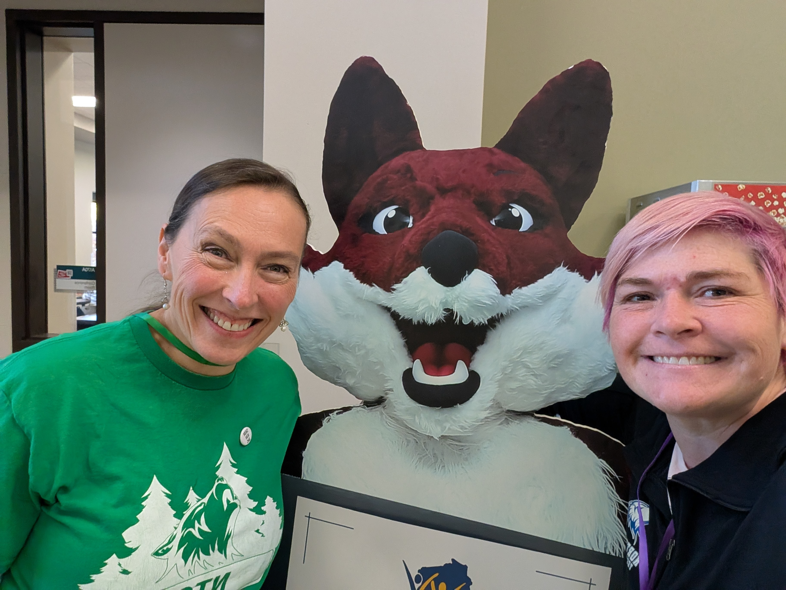

Connection builds confidence
Strong communication, regular presence, and personalized feedback helped students feel supported, seen, and capable.
Announcements
Email support
Student confidence
This page highlights the throughline of my work this year: creating meaningful student experiences, strengthening course design, and extending that impact through collaboration, leadership, and community engagement.
Instead of walking through every item, this view focuses on the strongest examples from each area.
Strong communication, regular presence, and personalized feedback helped students feel supported, seen, and capable.
Interactive strategies like H5P, scaffolded projects, escape rooms, and collaborative tools pushed learning beyond passive content consumption.
Clear modules, intentional pacing, and flexible formats supported diverse learners while maintaining high expectations.
The course shifted toward practical financial decision-making, scenario-based learning, and a capstone personal financial plan.
Competencies were streamlined, assessment variety expanded, and H5P activities added to improve clarity and engagement.
AI pilots and tools were used with purpose, to create more personalized practice, feedback, accessibility, and student support.
Dual credit mentoring, College 101 work, and high school instruction extended learner support beyond a single classroom.
Cross-program work, faculty support, and advisory participation helped connect general education to broader institutional goals.
Service through local leadership and community partnerships reflected a broader commitment to belonging, advocacy, and civic impact.
A simple structure you can use while clicking through the page or speaking alongside it.
Overall, this year was less about adding more and more about being intentional, designing learning experiences and systems that help students feel supported, capable, and successful.
These examples give you clickable proof points you can use while you present, instead of just talking about the work in the abstract.

Use this to show how course design became more practical, structured, and student-friendly. Pair it with the EconConvo visual for a stronger storytelling moment.

This is a concrete example of how AI-related learning was integrated into course design with purpose, not just novelty.

Use this to talk about statewide collaboration, visibility, and how your work connects to broader student success conversations across the system.

Nice supporting visual for course redesign, engagement, and finding more creative ways to connect content with students.

A fun, memorable visual you can use near the AI section to keep the site from feeling too formal or too text heavy.

Use this by the broader impact section to show presence, relationship-building, and community engagement beyond the classroom.
A few moments that add context, personality, and visibility to the work across leadership, innovation, and community engagement.

Caption: This moment captures the energy of statewide collaboration and the visibility that comes from sharing student-centered ideas beyond my own campus.
Caption: WTCS Voices gave me the chance to contribute to broader conversations about student support, innovation, and institutional learning across the technical college system.
Caption: Community-facing work matters because connection, visibility, and partnership strengthen both student opportunity and institutional presence.
Caption: I wanted my AI exploration to feel practical and human, grounded in support, experimentation, and helping students engage with new tools without intimidation.
Caption: This visual reflects my interest in making content more accessible and memorable through media, storytelling, and design choices that invite students in.

Caption: This playful piece shows the values that run through my work, care, civic commitment, humor, resilience, and a real investment in people and community.
These are not scripts. They are flexible starting points so you can sound natural while still staying focused.